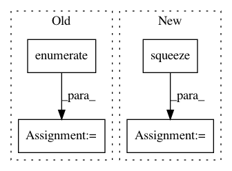

601d77a77a55323770bb2b214aa8844538b13d1f,art/visualization.py,,convert_to_rgb,#Any#,51
Before Change
s = np.shape(images)
rgb_images = np.zeros(shape=(s[0], s[1], s[2], 3))
for i, img in enumerate(images):
new_image = cv2.cvtColor(img, cv2.COLOR_GRAY2RGB)
rgb_images[i] = new_image
return rgb_images
def save_image(image, f_name):
After Change
if s[-1] == 1:
// Squeeze channel axis if it exists
rgb_images = np.squeeze(images, axis=-1)
else:
rgb_images = images
rgb_images = np.stack((rgb_images,) * 3, axis=-1)
return rgb_images
In pattern: SUPERPATTERN
Frequency: 3
Non-data size: 4
Instances
Project Name: IBM/adversarial-robustness-toolbox
Commit Name: 601d77a77a55323770bb2b214aa8844538b13d1f
Time: 2018-09-25
Author: Maria-Irina.Nicolae@ibm.com
File Name: art/visualization.py
Class Name:
Method Name: convert_to_rgb
Project Name: OpenNMT/OpenNMT-py
Commit Name: 26421ce20c6b626ceacafbb3282cad1d5dce04ca
Time: 2017-07-30
Author: bpeters@coli.uni-saarland.de
File Name: onmt/Models.py
Class Name: Embeddings
Method Name: forward
Project Name: Alexander-H-Liu/End-to-end-ASR-Pytorch
Commit Name: 28d8021977b9d811f84543ed85d5f011bc3695c6
Time: 2019-09-27
Author: alexliu36@gmail.com
File Name: src/asr.py
Class Name: Decoder
Method Name: forward